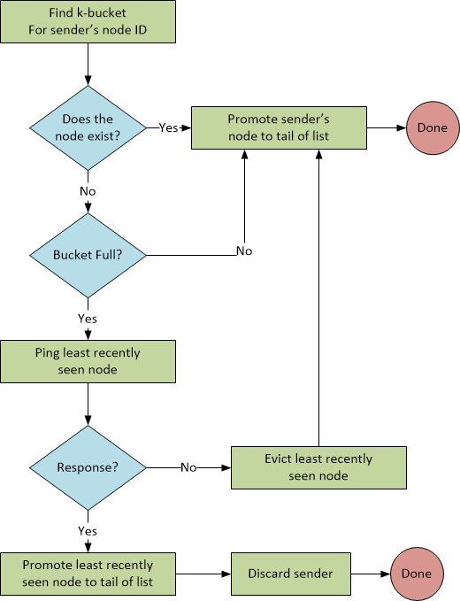

Version 2, Section 2.2 of the specification initially states this simple algorithm for dealing adding contacts:
When a Kademlia node receives any message (request or reply) from another node, it updates the appropriate k-bucket for the sender�s node ID. If the sending node already exists in the recipient�s k-bucket, the recipient moves it to the tail of the list. If the node is not already in the appropriate k-bucket and the bucket has fewer than k entries, then the recipient just inserts the new sender at the tail of the list. If the appropriate k-bucket is full, however, then the recipient pings the k-bucket�s least-recently seen node to decide what to do. If the least recently seen node fails to respond, it is evicted from the k-bucket and the new sender inserted at the tail. Otherwise, if the least-recently seen node responds, it is moved to the tail of the list, and the new sender�s contact is discarded.
Let's define a few terms (if you aren't sure, don't know, or just want some clarity):
Here's a flowchart of what the spec says:

This seems reasonable and the spec goes on to state:
k-buckets effectively implement a least-recently seen eviction policy, except that live nodes are never removed from the list. This preference for old contacts is driven by our analysis of Gnutella trace data collected by Saroiu et. al. ... The longer a node has been up, the more likely it is to remain up another hour. By keeping the oldest live contacts around, k-buckets maximize the probability that the nodes they contain will remain online. A second benefit of k-buckets is that they provide resistance to certain DoS attacks. One cannot flush nodes' routing state by flooding the system with new nodes. Kademlia nodes will only insert the new nodes in the k-buckets when old nodes leave the system.
We also observe that this has nothing to do with binary trees, which is something version 2 of the spec introduced. This is basically a hang-over from version 1 of the spec.
Section 2.4 states something slightly different:
Nodes in the routing tree are allocated dynamically, as needed. Initially, a node u�s routing tree has a single node� one k-bucket covering the entire ID space. When u learns of a new contact, it attempts to insert the contact in the appropriate k-bucket. If that bucket is not full, the new contact is simply inserted. Otherwise, if the k-bucket�s range includes u�s own node ID, then the bucket is split into two new buckets, the old contents divided between the two, and the insertion attempt repeated. If a k-bucket with a different range is full, the new contact is simply dropped.
The purpose of allowing a bucket to split if it contains the host's node ID is so that the host keeps a list of nodes that are "close to it" -- closeness defined essentially by the integer difference of the node ID's, not the XOR difference (more on this whole XOR thing later.)
So this algorithm looks like this:
What happened to pinging the least seen contact and replacing it?
But the spec then goes on to say:
One complication arises in highly unbalanced trees. Suppose node u joins the system and is the only node whose ID begins 000. Suppose further that the system already has more than k nodes with prefix 001. Every node with prefix 001 would have an empty k-bucket into which u should be inserted, yet u�s bucket refresh would only notify k of the nodes. To avoid this problem, Kademlia nodes keep all valid contacts in a subtree of size at least k nodes, even if this requires splitting buckets in which the node�s own ID does not reside. Figure 5 illustrates these additional splits.
This section of the specification apparently creates much confusion -- I found several links with people asking about this section. It's unfortunate that the original authors do not themselves answer these questions. Jim Dixon has a very interesting response12 on The Mail Archive which I present in full here:
"The source of confusion is that the 13-page version of the Kademlia uses
the same term to refer to two different data structures. The first is
well-defined: k-bucket i contains zero to k contacts whose XOR distance is
[2^i..2^(i+1)). It cannot be split. The current node can only be in
bucket zero, if it is present at all. In fact its presence would be
pointless or worse.
The second thing referred to as a k-bucket doesn't have the same
properties. Specifically, the current node must be present, it wanders
from one k-bucket to another, these k-buckets can be split, and there are
sometimes ill-defined constraints on the characteristics of subtrees of
k-buckets, such as the requirement that "Kademlia nodes keep all valid
contacts in a subtree of size of at least k nodes, even if this requires
splitting buckets in which the node's own ID does not reside" (section
2.4, near the end).
In a generous spirit, you might say that the logical content of the two
descriptions is the same. However, for someone trying to implement
Kademlia, the confusion of terms causes headaches -- and leads to a
situation where all sorts of things are described as Kademlia, because
they can be said to be, if you are of a generous disposition. However,
not surprisingly, they don't interoperate."
So my decision, given the lack of clarity and by the authors of the spec, is to ignore this, because, as you will see next, there is yet another version of how contacts are added.
In Section 4.2, on Accelerated Lookups, we have a different specification for how contacts are added:
Section 2.4 describes how a Kademlia node splits a k-bucket when the bucket is full and its range includes the node�s own ID. The implementation, however, also splits ranges not containing the node�s ID, up to b - 1 levels. If b = 2, for instance, the half of the ID space not containing the node�s ID gets split once (into two ranges); if b = 3, it gets split at two levels into a maximum of four ranges, etc. The general splitting rule is that a node splits a full k-bucket if the bucket�s range contains the node�s own ID or the depth d of the k-bucket in the routing tree satisfies d (mod b) != 0.
With regards to the definition of depth, does this mean "the length of prefix shared by any node that would reside in the k-bucket's range" or does it mean "the length of a prefix shared by all nodes currently in the k-bucket?"
If we look at Brian Muller's implementation, we see the latter case:
def depth(self): sp = sharedPrefix([bytesToBitString(n.id) for n in self.nodes.values()]) return len(sp) def sharedPrefix(args): i = 0 while i < min(map(len, args)): if len(set(map(operator.itemgetter(i), args))) != 1: break i += 1 return args[0][:i]
Here, the depth is determined by the shared prefixes in the nodes.
So, when we use the following algorithm to determine whether a bucket can be split:
kbucket.HasInRange(ourID) || ((kbucket.Depth() % Constants.B) != 0)
What is this actually doing?
As buckets split, eventually buckets will become full that do not contain the node ID. The depth to which the bucket has split is based on the number of bits shared in the prefix of the contacts in the bucket. With random ID's, this number will initially be small, but as bucket ranges become more narrow from subsequent splits, more contacts will begin the share the same prefix and the bucket when split, will result in less "room" for new contacts. Eventually, when the bucket range becomes narrow enough, the number of bits shared in the prefix of the contacts in the bucket reaches the threshold b which the spec says should be 5.
Let's say your a new node and you want to register yourself with a known peer, but that peer is basically maxed out for the number of contacts that it can hold in the particular bucket for your ID -- the depth is b. In this case, you will not be added to the peer's contact list. The Kademlia spec does not indicate in its protocol how this condition should be handled. Interestingly, this is not an issue. Whether you are successfully added as a contact or not, you will receive back "nearby" peers. Any time you contact those peers (to store a value, for example) all the peers that you contact will try to add your contact. When one succeeds, your contact ID will be disseminated slowly through the network.
Given a peer with both an ID and a single contact ID of less than 2159, it will initially split once for 20 contacts that are added having ID's greater than 2159.
All of those 20 contacts having ID's greater than 2159 will go in the second bucket. The peer ID will not be in this second bucket range. If those contacts in the second bucket have ID's where the number of shared bits is b, therefore b mod b == 0, any new contact in the range of the second bucket will not be added.
 We can
verify this with a unit test:
We can
verify this with a unit test:
/// <summary>
/// Force a failed add by choosing node ID's that cause depth mod 5 != 0 to be false.
/// </summary>
[TestMethod]
public void ForceFailedAddTest()
{
// force host node ID to < 2^159 so the node ID is not in the 2^159 ... 2^160 range
byte[] hostID = new byte[20];
hostID[19] = 0x7F;
BucketList bucketList = new BucketList(new ID(hostID));
// Also add a contact in this 0 - 2^159 range, arbitrarily something not our host ID.
// This ensures that only one bucket split will occur after 20 nodes with ID >= 2^159 are added,
// otherwise, buckets will in the 2^159 ... 2^160 space.
byte[] id = new byte[20];
id[0] = 1;
bucketList.AddContact(new Contact(null, new ID(id)));
Assert.IsTrue(bucketList.Buckets.Count == 1, "Bucket split should not have occurred.");
Assert.IsTrue(bucketList.Buckets[0].Contacts.Count == 1, "Expected 1 contact in bucket 0.");
// make sure contact ID's all have the same 5 bit prefix and are in the 2^159 ... 2^160 - 1 space
byte[] contactID = new byte[20];
contactID[19] = 0x80;
// 1000 xxxx prefix, xxxx starts at 1000 (8)
// this ensures that all the contacts in a bucket match only the prefix as only the first 5 bits are shared.
// |----| shared range
// 1000 1000 ...
// 1000 1100 ...
// 1000 1110 ...
byte shifter = 0x08;
int pos = 19;
Constants.K.ForEach(() =>
{
contactID[pos] |= shifter;
bucketList.AddContact(new Contact(null, new ID(contactID)));
shifter >>= 1;
if (shifter == 0)
{
shifter = 0x80;
--pos;
}
});
Assert.IsTrue(bucketList.Buckets.Count == 2, "Bucket split should have occurred.");
Assert.IsTrue(bucketList.Buckets[0].Contacts.Count == 1, "Expected 1 contact in bucket 0.");
Assert.IsTrue(bucketList.Buckets[1].Contacts.Count == 20, "Expected 20 contacts in bucket 1.");
// This next contact should not split the bucket as depth == 5 and therefore adding the contact will fail.
// Any unique ID >= 2^159 will do.
id = new byte[20];
id[19] = 0x80;
bucketList.AddContact(new Contact(null, new ID(id)));
Assert.IsTrue(bucketList.Buckets.Count == 2, "Bucket split should not have occurred.");
Assert.IsTrue(bucketList.Buckets[0].Contacts.Count == 1, "Expected 1 contact in bucket 0.");
Assert.IsTrue(bucketList.Buckets[1].Contacts.Count == 20, "Expected 20 contacts in bucket 1.");
}
What we've effectively done is break Kademlia, as the peer will no longer accept half of the possible ID range. As long as the peer ID is outside the range of a bucket whose shared prefix mod b is 0, we can continue this process by adding contacts with a shared prefixes (assume b==5) 01xxx, 001xx, 0001x, and 00001 and again for every multiple of b bits. If a peer has a "small" ID, you can easily prevent it from accepting new contacts within half of its bucket ranges.
There are several ways to mitigate this:
This is the flowchart of what we're implementing:
As I'm using Brian Muller's implementation as the authority with regards to the spec, we'll go with how he coded the algorithm and (eventually) incorporating the fallback where we discard nodes in a full k-bucket that don't respond to a ping -- but that's later.
The BucketList class implements the algorithm to add a contact:
/// <summary>
/// Add a contact if possible, based on the algorithm described
/// in sections 2.2, 2.4 and 4.2
/// </summary>
public void AddContact(Contact contact)
{
Validate.IsFalse<OurNodeCannotBeAContactException>(ourID == contact.ID, "Cannot add ourselves as a contact!");
contact.Touch(); // Update the LastSeen to now.
KBucket kbucket = GetKBucket(contact.ID);
if (kbucket.Contains(contact.ID))
{
// Replace the existing contact, updating the network info and LastSeen timestamp.
kbucket.Replace(contact);
}
else if (kbucket.IsBucketFull)
{
if (CanSplit(kbucket))
{
// Split the bucket and try again.
(KBucket k1, KBucket k2) = kbucket.Split();
int idx = GetKBucketIndex(contact.ID);
buckets[idx] = k1;
buckets.Insert(idx + 1, k2);
AddContact(contact);
}
else
{
// TODO: Ping the oldest contact to see if it's still
// around and replace it if not.
}
}
else
{
// Bucket isn't full, so just add the contact.
kbucket.AddContact(contact);
}
}
We have a few helper methods in this class as well:
protected virtual bool CanSplit(KBucket kbucket)
{
return kbucket.HasInRange(ourID) || ((kbucket.Depth() % Constants.B) != 0);
}
#if DEBUG
public KBucket GetKBucket(ID otherID)
#else
protected KBucket GetKBucket(ID otherID)
#endif
{
return buckets[buckets.FindIndex(b => b.HasInRange(otherID))];
}
protected int GetKBucketIndex(ID otherID)
{
return buckets.FindIndex(b => b.HasInRange(otherID));
}
The method CanSplit is virtual so you can provide a different implementation.
The majority of the remaining work is done in the KBucket class:
/// <summary>
/// Splits the kbucket into returning two new kbuckets filled with contacts separated by the new midpoint
/// </summary>
public (KBucket, KBucket) Split()
{
BigInteger midpoint = (Low + High) / 2;
KBucket k1 = new KBucket(Low, midpoint);
KBucket k2 = new KBucket(midpoint, High);
Contacts.ForEach(c =>
{
// <, because the High value is exclusive in the HasInRange test.
KBucket k = c.ID.Value < midpoint ? k1 : k2;
k.AddContact(c);
});
return (k1, k2);
}
/// <summary>
/// Returns number of bits that are in common across all contacts.
/// If there are no contacts, or no shared bits, the return is 0.
/// </summary>
public int Depth()
{
bool[] bits = new bool[0];
if (contacts.Count > 0)
{
// Start with the first contact.
bits = contacts[0].ID.Bytes.Bits().ToArray();
contacts.Skip(1).ForEach(c => bits = SharedBits(bits, c.ID));
}
return bits.Length;
}
/// <summary>
/// Returns a new bit array of just the shared bits.
/// </summary>
protected bool[] SharedBits(bool[] bits, ID id)
{
bool[] idbits = id.Bytes.Bits().ToArray();
// Useful for viewing the bit arrays.
//string sbits1 = System.String.Join("", bits.Select(b => b ? "1" : "0"));
//string sbits2 = System.String.Join("", idbits.Select(b => b ? "1" : "0"));
int q = Constances.ID_LENGTH_BITS - 1;
int n = bits.Length - 1;
List<bool> sharedBits = new List<bool>();
while (n >= 0 && bits[n] == idbits[q])
{
sharedBits.Insert(0, (bits[n]));
--n;
--q;
}
return sharedBits.ToArray();
}
Recall that the ID is stored as a little-endian value, and the prefix is most
significant bits, so we have to work the ID backwards n-1 to 0.
 Also note
the implementation of the
Also note
the implementation of the Bytes property in the ID class:
// Zero-pad msb's if ToByteArray length != Constants.LENGTH_BYTES
// The array returned is in little-endian order (lsb at index 0)
public byte[] Bytes
{
get
{
byte[] bytes = new byte[Constants.ID_LENGTH_BYTES];
byte[] partial = id.ToByteArray().Take(Constants.ID_LENGTH_BYTES).ToArray(); // remove msb 0 at index 20.
partial.CopyTo(bytes, 0);
return bytes;
}
}
and the Bits extension method:
/// <summary>
/// Little endian conversion of bytes to bits.
/// </summary>
public static IEnumerable<bool> Bits(this byte[] bytes)
{
IEnumerable<bool> GetBits(byte b)
{
byte shifter = 0x01;
for (int i = 0; i < 8; i++)
{
yield return (b & shifter) != 0;
shifter <<= 1;
}
}
return bytes.SelectMany(GetBits);
}
 A few basic unit tests:
A few basic unit tests:
[TestMethod]
public void UniqueIDAddTest()
{
BucketList bucketList = new BucketList(ID.RandomID);
Constants.K.ForEach(() => bucketList.AddContact(new Contact(null, ID.RandomID)));
Assert.IsTrue(bucketList.Buckets.Count == 1, "No split should have taken place.");
Assert.IsTrue(bucketList.Buckets[0].Contacts.Count == Constants.K, "K contacts should have been added.");
}
[TestMethod]
public void DuplicateIDTest()
{
BucketList bucketList = new BucketList(ID.RandomID);
ID id = ID.RandomID;
bucketList.AddContact(new Contact(null, id));
bucketList.AddContact(new Contact(null, id));
Assert.IsTrue(bucketList.Buckets.Count == 1, "No split should have taken place.");
Assert.IsTrue(bucketList.Buckets[0].Contacts.Count == 1, "Bucket should have one contact.");
}
[TestMethod]
public void BucketSplitTest()
{
BucketList bucketList = new BucketList(ID.RandomID);
Constants.K.ForEach(() => bucketList.AddContact(new Contact(null, ID.RandomID)));
bucketList.AddContact(new Contact(null, ID.RandomID));
Assert.IsTrue(bucketList.Buckets.Count > 1, "Bucket should have split into two or more buckets.");
}
Some very interesting things are revealed with the above implementation. Let's write a unit test that runs the process of adding 3200 contacts, and we do this 100 times, to get some results about the number of contacts that are actually added:

[TestMethod]
public void RandomIDDistributionTest()
{
Random rnd = new Random();
byte[] buffer = new byte[20];
List<int> contactsAdded = new List<int>();
100.ForEach(() =>
{
rnd.NextBytes(buffer);
BucketList bucketList = new BucketList(new ID(buffer));
3200.ForEach(() =>
{
rnd.NextBytes(buffer);
bucketList.AddContact(new Contact(null, new ID(buffer)));
});
int contacts = bucketList.Buckets.Sum(b => b.Contacts.Count);
contactsAdded.Add(contacts);
});
Assert.IsTrue(contactsAdded.Average().ApproximatelyEquals(720, 20), "Unexpected distribution.");
Assert.IsTrue(contactsAdded.Select(n=>(double)n).StdDev().ApproximatelyEquals(10, 2), "Bad distribution");
}
 Things to note:
Things to note:
As noted above, the ID was determined by a random value of 0-255 for each byte in the 20 bytes ID space. What happens instead if we randomize the ID based instead on its prefix? Meaning that the distribution of ID's, based on their prefix, is randomly distributed? Some helper methods:
protected ID RandomizeBeyond(int bit)
{
byte[] randomized = Bytes;
ID newid = new ID(randomized);
// TODO: Optimize
for (int i = bit + 1; i < Constants.ID_LENGTH_BITS; i++)
{
newid.ClearBit(i);
}
// TODO: Optimize
for (int i = 0; i < bit; i++)
{
if (rnd.NextDouble() < 0.5)
{
newid.SetBit(i);
}
}
return newid;
}
/// <summary>
/// Clears the bit n, from the LSB.
/// </summary>
public void ClearBit(int n)
{
byte[] bytes = Bytes;
bytes[n / 8] &= (byte)((1 << (n % 8)) ^ 0xFF);
id = new BigInteger(bytes.Append0());
}
/// <summary>
/// Sets the bit n, from the LSB.
/// </summary>
public void SetBit(int n)
{
byte[] bytes = Bytes;
bytes[n / 8] |= (byte)(1 << (n % 8));
id = new BigInteger(bytes.Append0());
}
Also, a random ID generator:
/// <summary>
/// Produce a random ID distributed evenly across the 160 bit space.
/// </summary>
public static ID RandomID
{
get
{
byte[] data = new byte[Constants.ID_LENGTH_BYTES];
ID id = new ID(data);
// Uniform random bucket index.
int idx = rnd.Next(Constants.ID_LENGTH_BITS);
// 0 <= idx <= 159
// Remaining bits are randomized to get unique ID.
id.SetBit(idx);
id = id.RandomizeBeyond(idx);
return id;
}
}
 This affects the bucket splitting algorithm. Notice with this unit
test:
This affects the bucket splitting algorithm. Notice with this unit
test:
[TestMethod]
public void RandomPrefixDistributionTest()
{
List<int> contactsAdded = new List<int>();
100.ForEach(() =>
{
BucketList bucketList = new BucketList(ID.RandomID);
3200.ForEach(() => bucketList.AddContact(new Contact(null, ID.RandomID)));
int contacts = bucketList.Buckets.Sum(b => b.Contacts.Count);
contactsAdded.Add(contacts);
});
Assert.IsTrue(contactsAdded.Average().ApproximatelyEquals(1900, 200), "Unexpected distribution.");
Assert.IsTrue(contactsAdded.Select(n => (double)n).StdDev().ApproximatelyEquals(750, 50), "Bad distribution");
}
Notice how large the standard deviation is -- there is something go on here, which we'll explore next.
 Let's look at what happens when we assign a node ID as one of 2i
where 0 <= i < 160 and add 3200 integer random contact ID's. Here's the unit test, which outputs the count of
contacts added to each node ID in the set of i:
Let's look at what happens when we assign a node ID as one of 2i
where 0 <= i < 160 and add 3200 integer random contact ID's. Here's the unit test, which outputs the count of
contacts added to each node ID in the set of i:
[TestMethod]
public void DistributionTestForEachPrefix()
{
Random rnd = new Random();
StringBuilder sb = new StringBuilder();
byte[] buffer = new byte[20];
160.ForEach((i) =>
{
BucketList bucketList = new BucketList(new ID(BigInteger.Pow(new BigInteger(2), i)));
rnd.NextBytes(buffer);
3200.ForEach(() =>
{
rnd.NextBytes(buffer);
bucketList.AddContact(new Contact(null, new ID(buffer)));
});
int contacts = bucketList.Buckets.Sum(b => b.Contacts.Count);
sb.Append(i + "," + contacts + CRLF);
});
File.WriteAllText("prefixTest.txt", sb.ToString());
}
That looks fairly reasonable.
 Compare the above with the distribution of contact counts when the contact ID
is selected from a random prefix with randomized bits after the prefix as
opposed to a random integer ID:
Compare the above with the distribution of contact counts when the contact ID
is selected from a random prefix with randomized bits after the prefix as
opposed to a random integer ID:
[TestMethod]
public void DistributionTestForEachPrefixWithRandomPrefixDistributedContacts()
{
StringBuilder sb = new StringBuilder();
160.ForEach((i) =>
{
BucketList bucketList = new BucketList(new ID(BigInteger.Pow(new BigInteger(2), i)));
3200.ForEach(() => bucketList.AddContact(new Contact(null, ID.RandomID)));
int contacts = bucketList.Buckets.Sum(b => b.Contacts.Count);
sb.Append(i + "," + contacts + CRLF);
});
File.WriteAllText("prefixTest.txt", sb.ToString());
}
If there was a question as to whether to choose a node ID based on an even distribution in the prefix space vs. simply a random integer ID, I think this clearly demonstrates that a random integer ID is the best choice. If we want to support more than an average of ~700 contacts in our peer, we can always increase b.
To Be Continued... Part III - Node Lookup
[1] - http://www.tandfonline.com/doi/abs/10.1080/15427951.2015.1051674?src=recsys&journalCode=uinm20
[2] - https://github.com/zencoders/sambatyon/tree/master/Kademlia/Kademlia
[3] - http://xlattice.sourceforge.net/components/protocol/kademlia/specs.html
[4] - https://github.com/bmuller/kademlia
[5] - https://en.wikipedia.org/wiki/Smart_contract
[6] - http://sandhill.com/article/is-data-decentralization-the-new-trend/
[7] - https://arxiv.org/pdf/1506.03471.pdf
[8] - https://en.wikipedia.org/wiki/BitTorrent
[9] - https://en.wikipedia.org/wiki/Kad_network
[10] - https://en.wikipedia.org/wiki/Chord_(peer-to-peer)
[11] - https://en.wikipedia.org/wiki/Pastry_(DHT)
[12] - https://www.mail-archive.com/p2p-hackers@lists.zooko.com/msg00042.html
[15] - https://en.wikipedia.org/wiki/Kademlia
[16] - https://forum.emule-project.net/index.php?showtopic=32335[17] - http://www.emule-project.net/home/perl/general.cgi?l=1
[18] - https://forum.emule-project.net/index.php?showtopic=32335&view=findpost&p=214837
[19] - http://pub.tik.ee.ethz.ch/students/2006-So/SA-2006-19.pdf